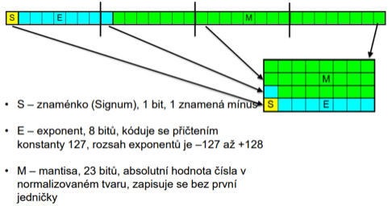

Jazyk C: Jednoduché datové typy, reprezentace signed a unsigned, dvojkový doplněk, floating point¶
Jednoduché datové typy se rozdělují na číselné a znakové. Číselné se dále dělí na datové typy s pevnou řádovou čárkou a s plovoucí řádovou čárkou. Datové typy s pevnou řádovou čárkou lze následně rozdělit na znaménkové a neznaménkové.

Neznaménkové¶
Rozsah čísla může být od 0 do maxima, např. pro 8 bitů: 0 až 255.
Druhy celočíselných neznaménkových datových typů: - 8b – unsigned char, %c/%hhu - 16b – unsigned short int, %hu - 16b – unsigned int, %u - 32b – unsigned long int, %lu - 64b – unsigned long long int, %llu
Hodnota se určuje pomocí:
Váhovový kód¶
Každý bit má svou váhu (hodnotu), která odpovídá mocnině čísla 2 podle pozice bitu. Bit na pozici (počítáno od nuly zprava) má váhu . Hodnota celého čísla se určí jako součet vah všech bitů nastavených na 1.
BCD kódování¶
Váhový kód pro každou čtveřici bitů.
Fixed point¶
Pozice řádové čárky (desetinné tečky) je pevně daná, to znamená, že není uložena v samotném čísle (na rozdíl od floating point). Číslo je reprezentováno jako celé binární číslo, ale interpretace je rozdělena na celou a desetinou část podle předem určeného počtu bitů.
Znaménkové¶
Rozsah čísla je posunutý, např. pro 8 bitů: -128 až +127.
Druhy celočíselných znaménkových datových typů: - 8b – signed char, %c/hhi - 16b – signed short int, %hi - 16b – signed int, %i/d - 32b – signed long int, %li - 64b – signed long long int, %lli
Existují tři základní způsoby kódování záporných čísel, které předpokládají zvolení konkrétní velikosti paměťové buňky (např. 8 bitů):
Vyhrazený bit (tzv. znaménkový – signum)¶
Jeden bit v buňce vyhradíme a dáme mu význam znaménka. Pro hodnotu čísla zbude menší počet bitů. Je nutné zvolit, který bit bude mít význam znaménka a jaká jeho hodnota bude mít význam mínus.
Výhoda: Snadno se kóduje i dekóduje. Okamžitě vidíme, zda je číslo kladné nebo záporné.
Nevýhoda: Nula je reprezentována dvěma kódy (nevyužívá všechny stavy systému). Není vhodné pro počítání.
Přičtení konstanty (offset)¶
Zvolíme si konstantu K, kterou přičteme k hodnotě čísla (pro kladná i záporná čísla). Do paměti pak ukládáme takto upravenou hodnotu. Při dekódování naopak hodnotu K odečteme. Hodnotu K lze zvolit libovolně, obvykle se volí jako polovina kapacity soustavy. Jestli je číslo záporné lze snadno rozlišit pouze pokud je konstanta K volena jako polovina kapacity soustavy.
Výhoda: Využívá plný počet stavů systému. Vhodnou volbou konstanty K lze pokrýt i nesymetrii.
Nevýhoda: Není vhodné pro počítání, jelikož v sobě zahrnuje konstantu K.
Dvojkový doplněk¶
Dvojkovým doplňkem rozumíme rozdíl kapacity soustavy a absolutní hodnoty čísla. Do paměti počítače ukládáme u kladných čísel jejich hodnotu přímo, u záporných pak jejich dvojkový doplněk. Řeší problém dvou reprezentací nul a při sčítání nevyžaduje speciální hardware (stačí prostá sčítačka), ale nastává problém v rozsahu (overflow), kdy se sečtou dvě čísla, jejichž výsledek je větší, než daný rozsah dovoluje, a proto se musí nastavit správný počet bitů pro rozsah, aby k přetečení nedocházelo. Nastavení správného rozsahu pro sčítání je jeho zvětšení o jeden bit oproti počtu bitů toho většího čísla, které chceme sčítat. U násobení se správný počet bitů rozsahu nastavuje jako součet bitů čísel, které chceme mezi sebou vynásobit a správný výsledek je zaručen pomocí aritmetického posuvu. Dvojkový doplněk lze dle své definice zapsat jako \(2^n - |x|\) a postup kódování je následující:
- Převedeme absolutní hodnotu čísla do binární soustavy a doplníme na požadovaný počet míst.
- Provedeme negaci všech bitů.
- Přičteme binárně hodnotu 1.
Výhoda: Využívá plný počet stavů systému. Okamžitě vidíme, zda číslo je kladné nebo záporné. Lze také přímo sčítat a odečítat.
Nevýhoda: Je složitější na kódování a dekódování.
Převod čísel s řádovou čárkou do binární soustavy¶
Rozdělíme si číslo na celou a desetinnou část. Celou část převedeme standardním způsobem. Desetinnou část převedeme analogicky, pouze místo dělení dvěma použijeme násobení dvěma a místo zbytku po dělení opisujeme jako výsledek celou část. Výsledné číslo v binární soustavě získáme složením celé a desetinné části.
Konstrukce datové proměnné typu Single¶
-
Vyjádřete absolutní hodnotu daného čísla X v binární soustavě (odděleně převeďte celou a desetinnou část).
-
Vytvořte normalizovaný tvar: Řádovou tečku posuňte za první jedničku zleva, počet posunutí určí hodnotu EXPONENTU:
- Žádný posun => e = 0
- Posun vpravo => e < 0
- Posun vlevo => e > 0
-
Určete obsah pole S:
- X >=0 => S=0
- X < 0 => S=1
-
Určete obsah pole E: Vyjádřete hodnotu e+127 binárním váhovým kódováním (jako typ Byte)
-
Určete obsah pole M: Jsou to bity, které zůstaly po posunutí řádové tečky vpravo od ní.

Získání hodnoty reálného čísla z datového typu Single se provádí opačným postupem nebo dosazením do vzorce:
\((-1)^S \cdot 2^{E-127} \cdot (1,M)\)
Popsaný způsob kódování má své limity – například není možné vyjádřit hodnotu nula nebo nekonečno. Proto jsou zavedeny následující výjimky: - Pokud S = 0, E = 0 a M = 0 : hodnota čísla je nula - Pokud e = -127 : exponent se bere jako –126 a absolutní hodnota nemá tvar (1,M), ale (0,M) - Pokud e = 128 : hodnota čísla je nekonečno, M musí být 0. Jiné hodnoty M jsou neplatné
Problém nastává také při sčítání velmi velkého a velmi malého čísla, kde v důsledku zaokrouhlovacích chyb dochází k zanedbání čísla s malou hodnotou.